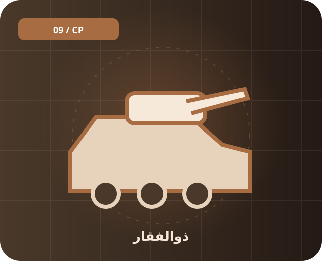

📚 پیشینه و معرفی
ذوالفقار خانوادهای از تانکهای ایرانی است که در نمونههای مختلف معرفی شده. منابع عمومی درباره تعداد دقیق و مشخصات برخی نسخهها اختلاف دارند؛ بنابراین این مدخل بر معرفی کلی تمرکز دارد.
خانواده تانکهای ایرانی که توسعه آن از دهه ۱۹۹۰ گزارش شده است.

ذوالفقار خانوادهای از تانکهای ایرانی است که در نمونههای مختلف معرفی شده. منابع عمومی درباره تعداد دقیق و مشخصات برخی نسخهها اختلاف دارند؛ بنابراین این مدخل بر معرفی کلی تمرکز دارد.
تانک اصلی میدان نبرد در دسته زرهی قرار میگیرد. خانواده تانکهای ایرانی که توسعه آن از دهه ۱۹۹۰ گزارش شده است.
برای شناخت دقیقتر، تاریخ انتشار منبع، نسخه دقیق تجهیز و تفاوت میان اعلام رسمی و ارزیابی مستقل را بررسی کن. یک نام گاهی به چند نسخه متفاوت اشاره دارد.
ذوالفقار، تانک، زرهی